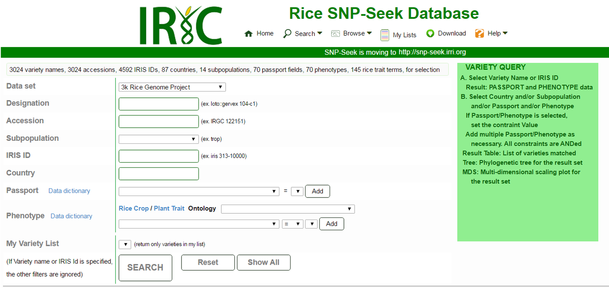
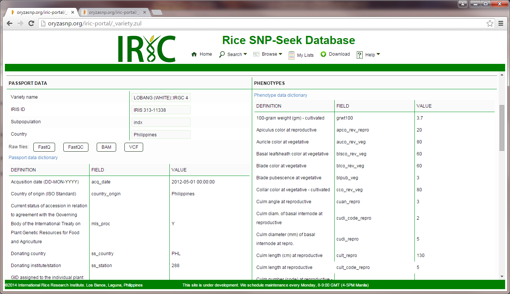
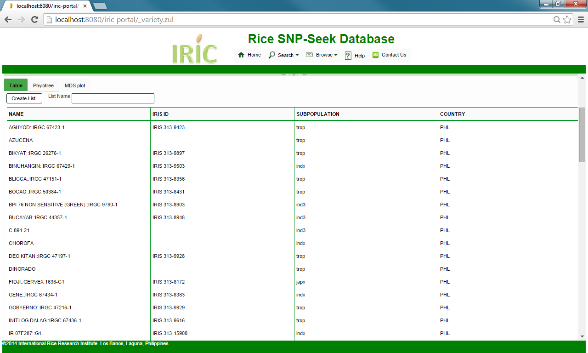
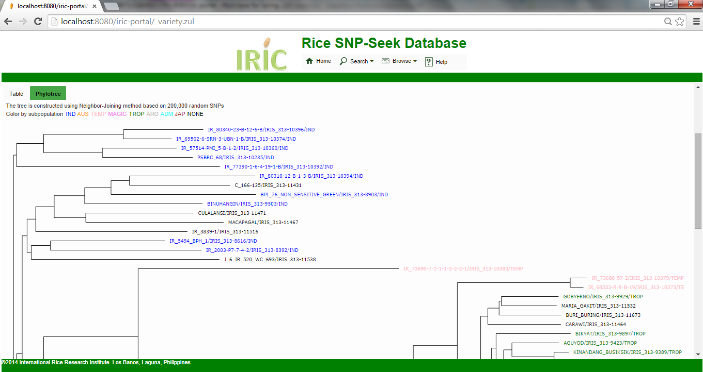
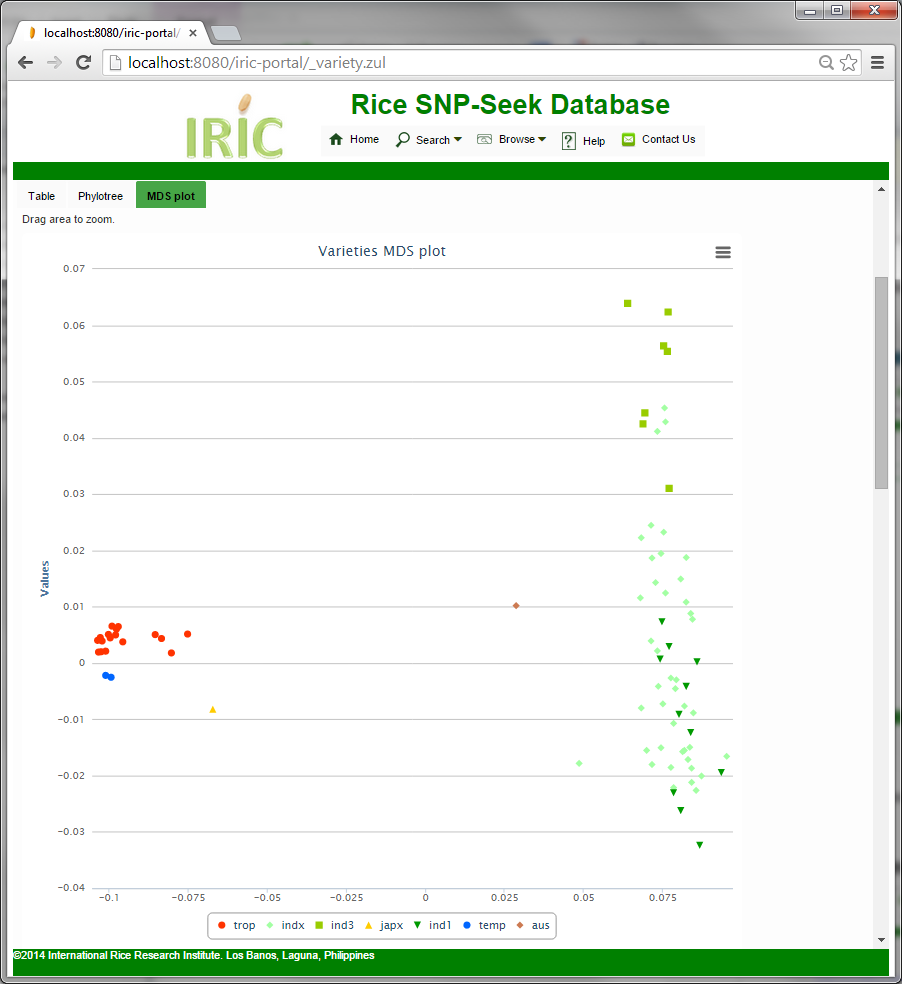

Variety Query

The Variety Query interface returns the list of varieties from specified country of origin and/or is a member a subpopulation. It can also retrieve passport and phenotypic data for a given Variety or IRIS ID.
To get Variety information:
Select the Dataset to search (3kRGP, HDRA)
Type in the Designation or IRIS ID or Accession at their corresponding boxes, which have auto-completion feature. Only one of these fields should be specified. The results are Passport data listed at the left panel and Phenotypes with values at the right. The meaning of the values are explained in the Passport data dictionary and Phenotype data dictionary.

The nearest relatives can be explored using the MDS plot centered at the selected variety.
To search varieties from a country and/or a subpopulation
Type in the country and/or the subpopulation at their corresponding auto-complete boxes. If both are specified, the resulting set of varieties satisfy both constraints. The examples below query for varieties from the Philippines.
To search varieties by phenotype and/or passport data
Varieties can also be filtered using any number of passport values:
- Select the passport field from the list.
- The valid values for the selected field is listed in the adjacent listbox.
- Set the field value from the list.
- Click the Add button to add more passport constraint.
To search varieties by phenotype data
Varieties can also be filtered using any number of phenotype values:
- Select the phenotype field from the list. The phenotypes listed may be limited only to descendants of terms from the Rice Trait Ontology (CO_320) or Plant Trait Ontology (TO).
- The valid values for the selected field is listed in the adjacent listbox.
- Select the comparator as = (equals), < (less than) or > (greater than), and value from the list.
- Click the Add button to add more phenotype constraints.
To search varieties by Rice Crop (CO_320) or Plant Trait Ontology (TO)
The traits are mapped to Crop and Trait Ontology terms. The traits can be selected to belong to the selected CO/TO terms.
-
Select the CO_320 or TO term from the list.
-
The list of phenotypes in the last phenotype contraint listbox is limited only to descendants of the selected CO/TO term.
-
Set phenotype constraint as describe above.
Varieties search result
The final result is the intersection of varieties that satisfy all constraints as specified in Country, Subpopulation, Passport and Phenotype filters. The resulting set of varieties can be viewed as a table, or in a phylogenetic tree or MDS plot.
Table - This lists the varieties satisfying the constraints sorted by name. Selecting a variety from this list will display its Variety passport and phenotype data. The user can create a Variety List from the query result by providing a List Name then clicking the Create List button. The created list can then be used for further analysis.

Phylotree - The phylogenetic tree of the result is dynamically computed based on SNP values from 200,000 random positions between the varieties. The varieties are colored based on their subpopulation, and clicking the node displays the Variety passport and phenotype data.

MDS Plot - The MDS (Multidimensional Scaling) Plot displays the distances between every varietry pairs of the resulting set into two-dimensional projection. It uses the same distance matrix as with the phylogenetic tree. The variety nodes are colored based on subpopulation, and clicking the node displays the Variety passport and phenotype data.

Created with the Personal Edition of HelpNDoc: Free CHM Help documentation generator